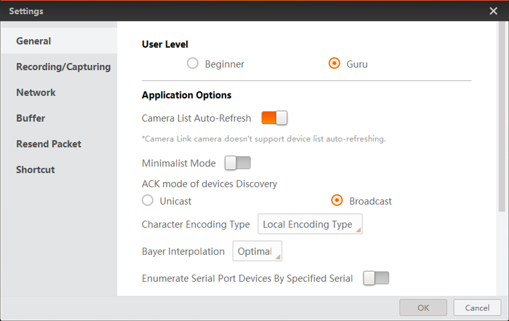
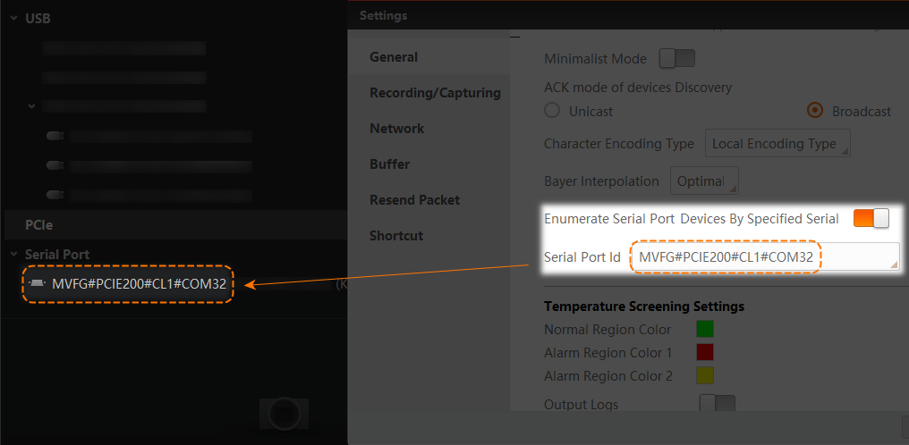
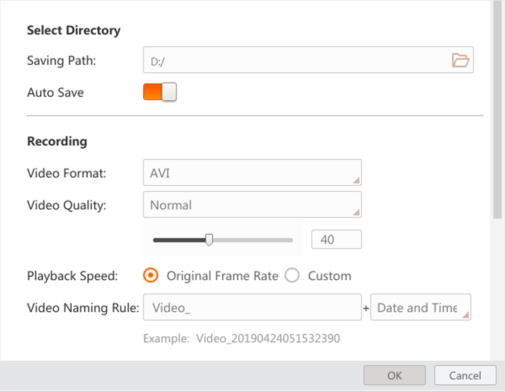
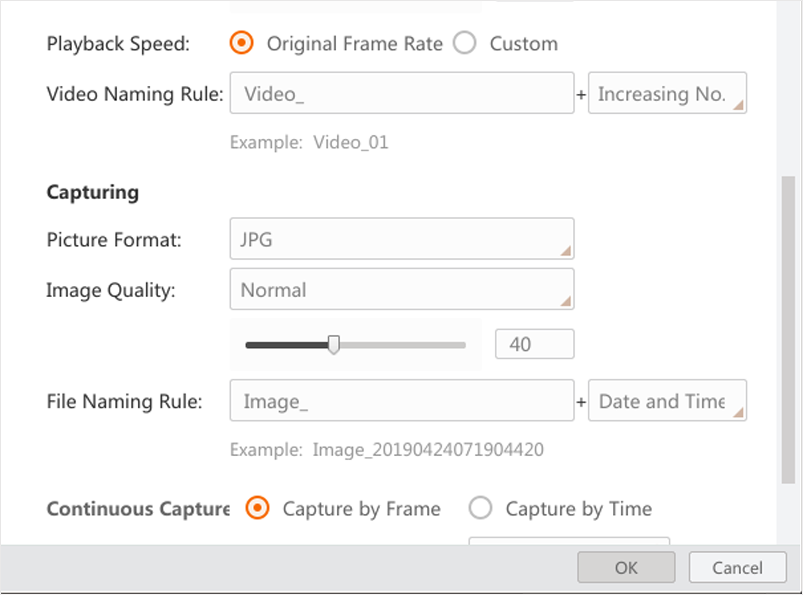
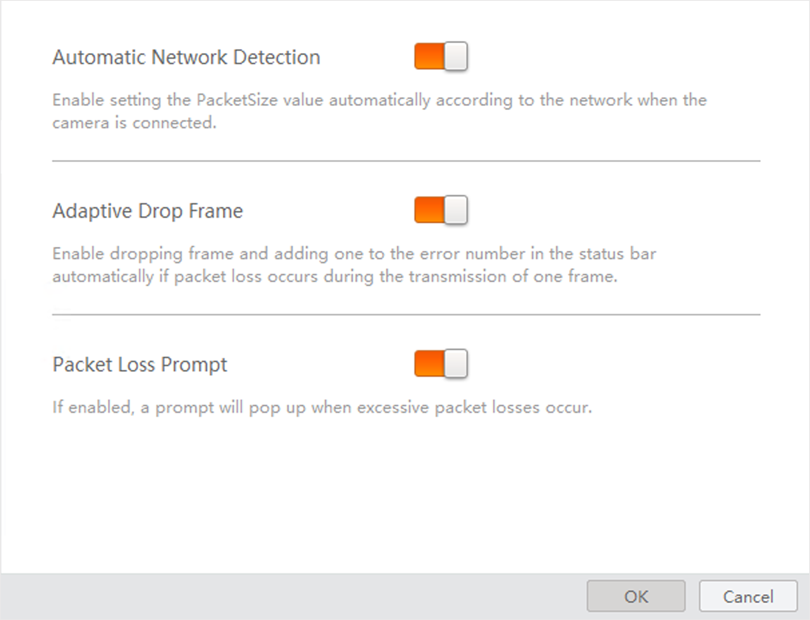
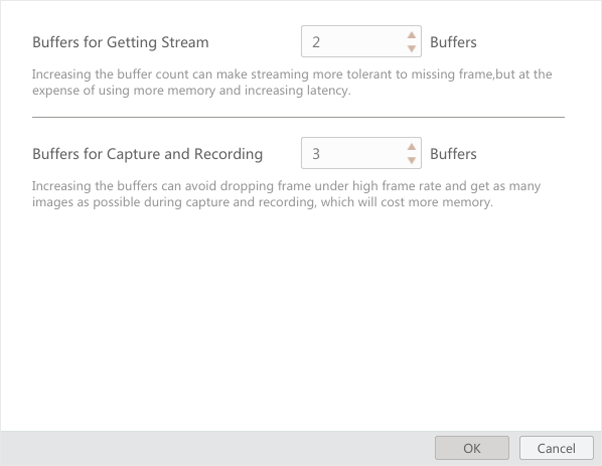
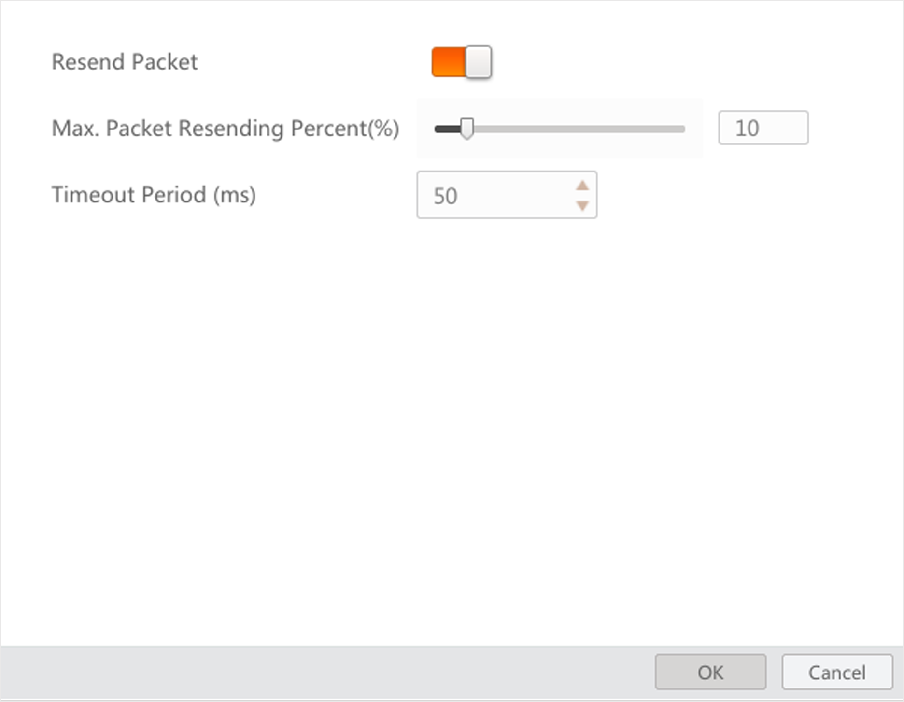

You can configure settings for the Software, including general parameters, recording and capture parameters, buffer size, and packet resending parameters via the Settings sub-menu.
You can set the general settings, including user level, auto-refresh settings of the device list, character encoding type, Bayer interpolation, and other related configurations.
Go to to configure the following parameters.

Figure 1 General SettingsYou can select Beginner or Guru. When set to the Beginner mode, the feature tree only displays some fundamental features, while the Guru mode displays all available features.
You can turn on Camera List Auto-Refresh to refresh the camera list (device list) automatically.
Devices in Serial Port and GenTL interface require manually refreshing.
When enabled, the Software stops automatically refreshing to save system resources. You should manually refresh its camera list, feature tree, log, and other information to obtain updated status. You can enable this feature when using the Software to render high-resolution acquired images.
When enabled, you cannot enable Camera List Auto-Refresh.
The communication mode between the Software and the detected IP addresses on the same network segment with the PC that runs the Software. By default, the ACK mode is in Broadcast mode. If the Software fails to enumerate a camera, you can switch it to Unicast and try again.
The encoding type of characters displayed on the Software interface. If you find a character on the interface unreadable, change the character encoding type and try again. Local encoding type refers to the encoding type of the current PC where the Software runs. UTF-8 is a method for encoding Unicode characters using 8-bit sequences.
The interpolating modes for transferring an image of bayer format to RGB format.
Applicable when connecting serial port devices. Once enabled, specify the Serial Port Id to which the Software enumerates connected devices. Then, you need to manually enumerate the connected devices in the device list.

Figure 2 Enumerate through Serial Port IDThe color or regions with normal temperature.
The 2 colors of regions with an alarm triggered by abnormal temperatures.
If the alarm of screening region is not acknowledged after 200 seconds, the two colors will flash by turns.
To display the colors of screening regions, you need to finish the following operations beforehand.
Draw a temperature screening region. See Temperature Screening Configuration.
Set alarm rules of temperature screening regions. See Configure Temperature Screening Parameters.
Select Region Information Overlap as Client.
When enabled, the Software outputs temperature screening logs.
You can set the recording parameters and capture parameters as required.
For details about capture and recording, see Capture and Recording.
Go to to configure the following parameters.
Select Directory for the captured pictures and recorded videos.
Set a saving path for the recorded video files or captured pictures during live view.
When enabled, the recorded video files or the captured pictures during live view will be automatically saved to the saving path you set.
The maximum pictures that can be auto saved depends on the storage space of the saving path you set.
Set parameters related to recording.
Set format (AVI or RAW) for the recorded video files.
If you set AVI as the video format, you can select Normal, Better, or Best from the drop-down list as the video quality, or drag the slider to adjust the compression ratio so as to set video quality.
The compression ratio for Normal is from 0 to 40, for Better from 41 to 70, for Best from 71 to 100.
The higher the compression ratio is, the better the video quality. The better the video quality, the more image details can be displayed.
If you set AVI as the video format, you can set the playback speed for the recorded video files.
Customize a prefix and select Date and Time or Increasing No. as the naming rule.
The video name will be a number which represents the data and time when the video file is saved. For example, if you set Video as the prefix of the name, the full name would be Video_20190424051532390.
The video names will be increasing No. For example, if a video file is the second one you saved and you set Video as the prefix, the full name of the video would be Video_02.

Figure 3 Recording SettingsSet parameters related to the capturing of pictures.
Set format (BMP, RAW, JPG, PNG, TIFF) for the captured pictures during live view.
If you set JPG or PNG as the picture format, you can select Normal, Better, or Best from the drop-down list as the picture quality, or drag the slider to adjust the compression ratio so as to set picture quality.
The compression ratio for Normal is from 0 to 40, for Better from 41 to 70, for Best from 71 to 100.
The higher the compression ratio is, the better the picture quality.
Customize a prefix and select Date and Time, Frame No., or Time Stamp as the naming rule for the captured pictures.
The picture name will be a number which represents the data and time when the video file is saved. For example, if you set Image as the prefix of the name, the full name would be Image_20190424051532390.
The picture names will be frame No. For example, if a picture file is the second one you saved and you set Image as the prefix, the full name of the video would be Image_02.
The picture name will be a serial number which represents the timestamp. For example, Image_00000001576677065.
Set the capture mode.
The pictures will be captured by frame(s) and the capture will be stopped after the set number of frames . For example, if you set "Capture Every 3 Frame(s)" and "Stop Capturing after 1000 Frame(s)" as the capture mode, a picture will be captured for each 3 frames, and the capture actions end after 1000 frames being acquired.
The pictures will be captured by time and the capture will be stopped after the time period you set. For example, if you set "Capture Every 2 Second(s)" and "Stop Capturing after 5 Minute(s)" as the capture mode, one picture will be captured each two seconds, and the capture actions will last 5 minutes.

Figure 4 Capture SettingsYou can configure the network settings, including automatic network detection, adaptive dropping frame, and packet loss prompt.
You can enable or disable Automatic Network Detection and (or) Adaptive Drop Frame to ensure the fluency of the image data acquisition according to the actual network environment.
You can also enable Packet Loss Prompt to allow the Software to pop up a prompt if the packet loss occurs.

Figure 5 Network SettingsBuffer settings allow you to balance image quality against image fluency.
You can adjust the values of Buffers for Getting Stream and (or) Buffers for Capture and Recording according to the memory conditions.
The maximum value is 30.
The maximum value is 10000.

Figure 6 Buffer SettingsPacket resending is a mechanism to ensure image quality by resending the lost or damaged packets during image data acquisition. You can set the packet-resending for the Software, including maximum packet resending percent and the timeout period for packet resending.
You can set the Resend Packet switch to on to enable the Software to resending packets, and then configure the following parameters.
The maximum percent of packets resent within one frame (default value: 10%). With larger packet resending percent, you can get more complete image data. Conversely, you can get more real-time image data.
The maximum time period (default value: 50 ms) that the Software can wait between two packets that need to be resent (either for the packet is lost or damaged). If the waiting time exceeds the time you set, the Software will not wait for or resend any packet.
You can set a relatively long timeout period if there are excessive packet losses.
You can set the value of Timeout Period from 0 ms to 1000 ms.

Figure 7 Packet Resending SettingsThe Software provides default keyboard shortcuts for some frequently-used functions such as connecting/disconnecting camera and starting and stopping acquisition. You can customize the shortcuts according to your actual needs.
The Delete key cannot be used as a keyboard shortcut.
Click to enter the Shortcut page.
You can do the following operations.
Customize a Shortcut: Select the text field of a function (such as Start/Stop Live View), and then press one or more keys at the same time to set a shortcut for the function.
Delete a Shortcut: Select the text field of a function, and then press the Delete key to delete the shortcut.
Restore Defaults: Click Restore Defaults to restore the shortcuts for all the listed functions to the default settings.